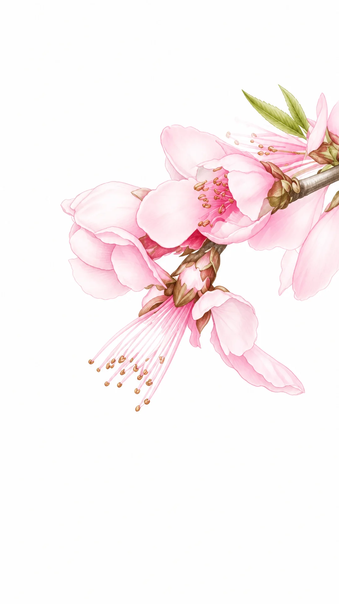
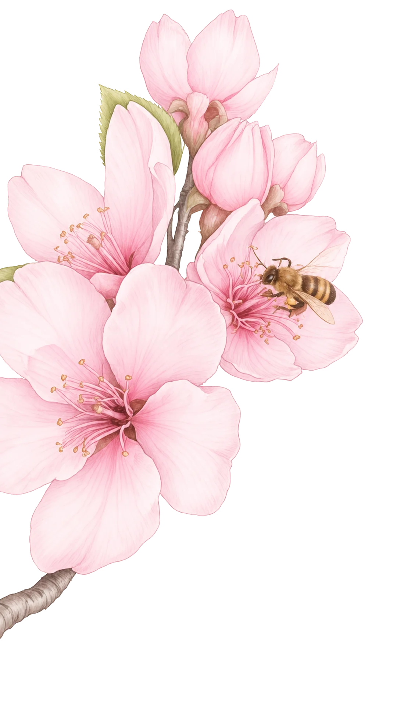
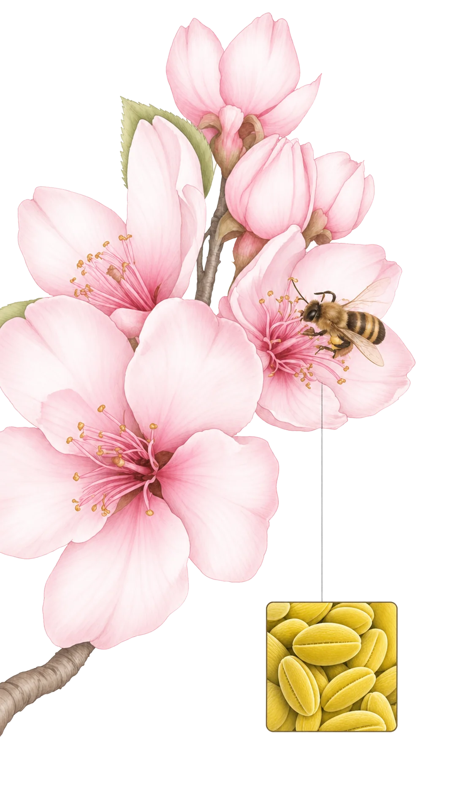
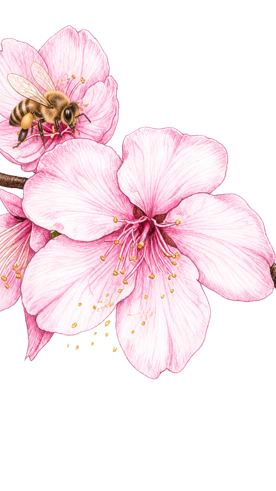
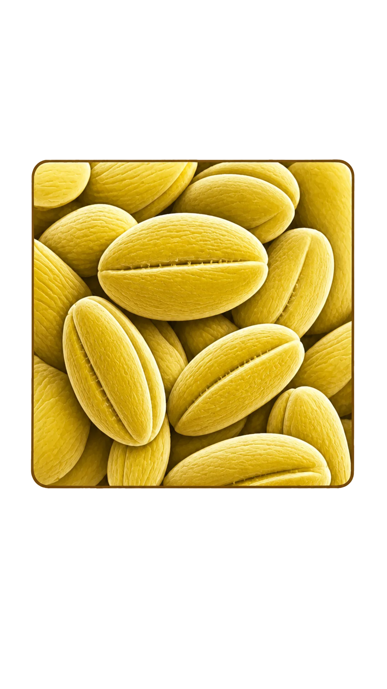
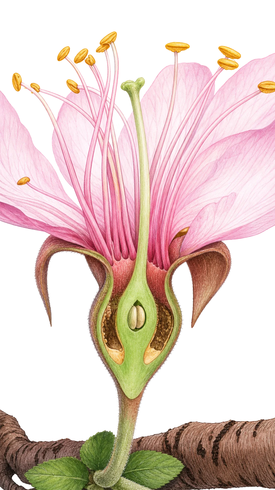

01 / 05
认识这盒桃

中油蟠7号黄油蟠桃
- 品种
- 中油蟠7号
- 类型
- 黄肉油蟠桃
- 品牌
- 一枝鲜桃
02 / 05
花开与授粉


花芽膨大
同一枝条，开始进入花期。02 / 05
花开与授粉

花药
柱头

拖动蜜蜂，先经过花药。
花药成熟后裂开，释放花粉。02 / 05 · 放大观察
花粉从哪里来？




02 / 05 · 花朵内部
寻找受精发生的位置


整花纵剖雄蕊环绕雌蕊，中央雌蕊连接柱头、花柱和子房。
02 / 05 · 花朵内部
花粉萌发与受精


柱头
花柱
子房
胚珠
- 萌发
- 花柱
- 子房
- 胚珠
授粉完成，但受精还没有发生。
轻触柱头上的花粉，继续观察。
02 / 05 · 本章结论
受精完成，果实开始形成
花粉抵达柱头是授粉；花粉管进入胚珠并释放两个精细胞，随后发生双受精。
一个精细胞与卵细胞结合形成受精卵，另一个参与形成胚乳；此后胚珠发育为种子，子房逐渐发育为果实。